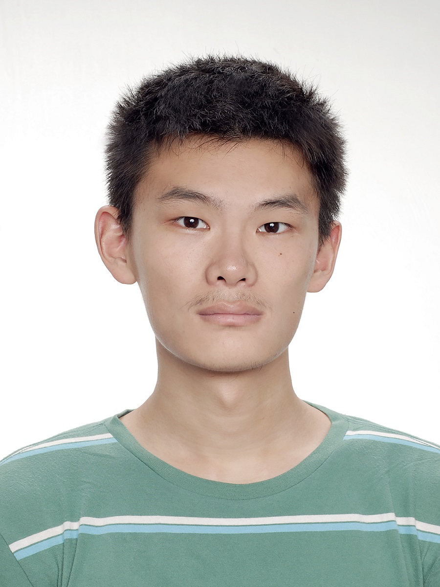

|
 |
Jiajie Huang
E-mail: H1402731943@sjtu.edu.cn
|
Jiajie Huang is currently working toward the B.Sc degree in Microelectronics Science and Technology in Shanghai Jiao Tong University, Shanghai, China.
He has received and accepted the postgraduate recommendation from the department of Micro/Nano Electronics, Shanghai Jiao Tong University.
He will be working in the Bio-Circuits and Systems Lab since Sep, 2020.
His research direction is Electrical Impedance Tomography (EIT) and his Final Year Project was Current Stimulator Design for the EIT system.
He has finished the Final Year Project and is preparing for the tapeout of the EIT Driver in August, 2020.
|